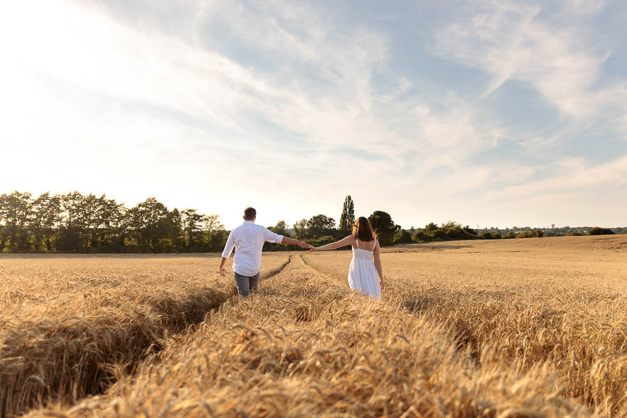
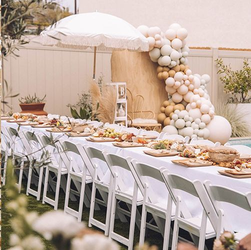
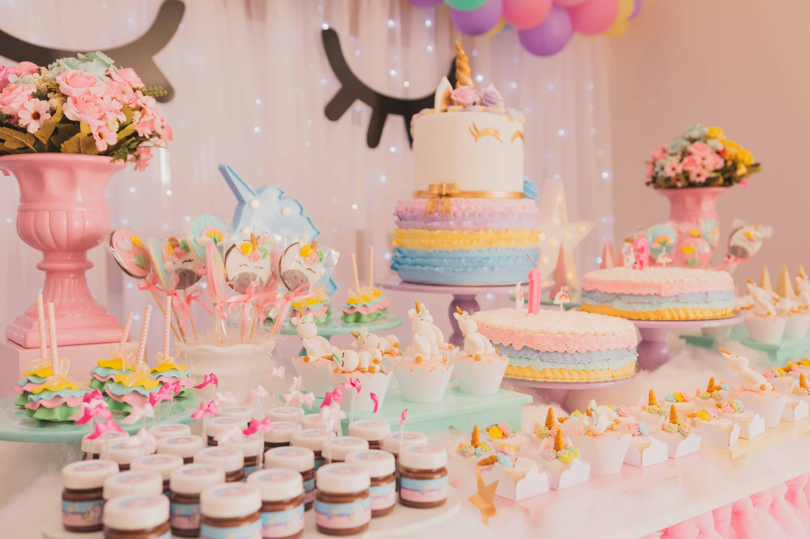

Our Services

WEDDINGD
A wedding is typically one of the most memorable days in a lifetime, one that people remember for years to come. For most couples, regular pictures just won't do. Wedding photography is much more than simply snapping a few pictures. It is a one kind of art. Just tell us what you need and we will fullfill that.

PRE SHOOT
A pre-shoot is a great way to get acquainted with being in front of the camera as many people haven't had professional photographs before - but it also gives me the perfect opportunity to see how you interact together, and capture the magical moments between you both.

BRIDAL SHOOT
A bridal portrait photoshoot is a picture session that involves the bride getting dolled up in her full bridal makeup, hair and outfit and taking photos before the big day. They're usually fashion-style shoots that involve the bride posing against a minimalistic backdrop.

BABY SHOWER
A baby shower is basically a party which is thrown to celebrate the impending birth of a new baby. It's also a way for friends and family to help the new parents get everything they need. After all, babies need tons of stuff, and the list can get quite expensive!

BIRTHDAY PARTIES
A baby shower is basically a party which is thrown to celebrate the impending birth of a new baby. It's also a way for friends and family to help the new parents get everything they need. After all, babies need tons of stuff, and the list can get quite expensive!